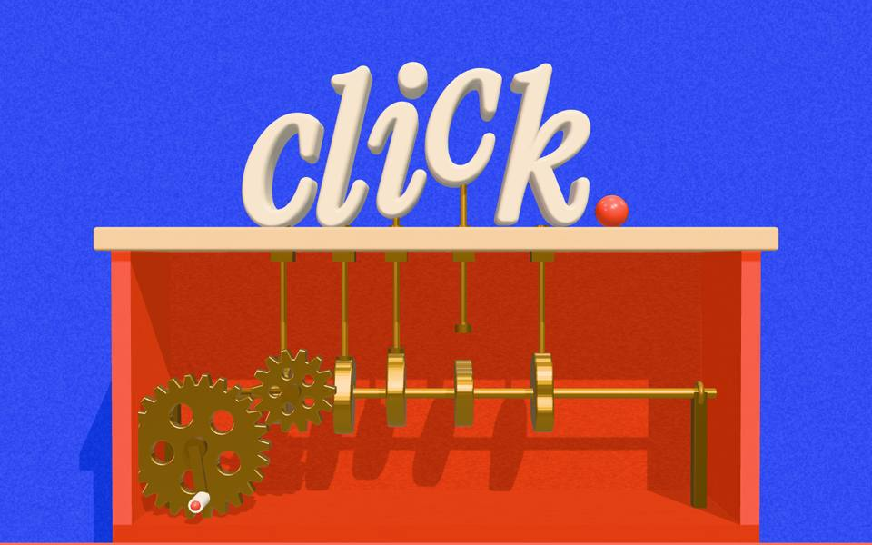
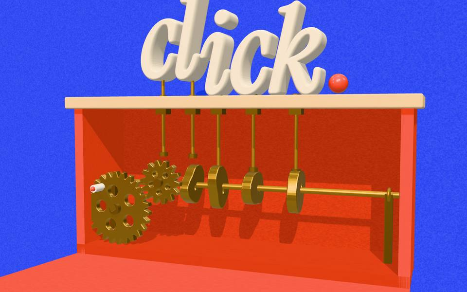
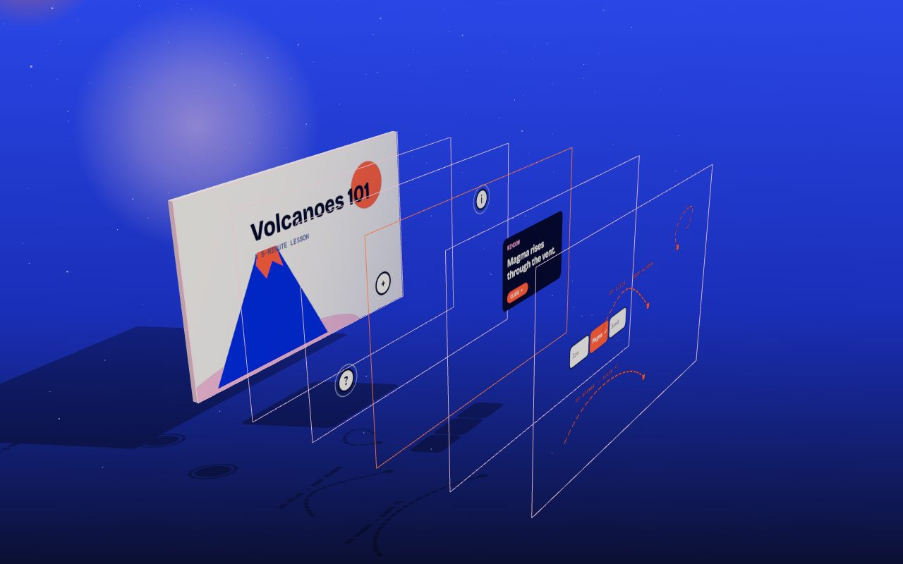

Quiz
Game
Map
Deck
Poll
Quest
Card
Room
Path
Test
Tour
Story
THE SCROLL LAB, AS A LIBRARY
All 111 effects of the Scroll Lab, live, each built from one snippet of plain HTML. Copy one with npx genially-scrolly add <name>, or ask Claude for /geniallyscrolly and describe the story you want. Charts use sample data. Switch the style at the top: every effect follows it.
01 · 6 effects


Behind the curtain

02 · 8 effects
Fill on scroll
Pieces fall into place
DECODED THE FIRST TIME IT IS SEEN
Highlight the key phrase as people read, then the next one.
npx genially-scrolly add weight-wave · block weight-wave · Needs a variable display font (all presets have one).
INTERACTIVE
03 · 6 effects

04 · 5 effects
A cloud of 60 lessons.
Grouped by who made them.
Ranked by completion.
05 · 18 effects
06 · 1 effects
07 · 3 effects
Founded in Córdoba.
Teachers adopt it.
Remote classes.
Everyone builds.
08 · 4 effects
npx genially-scrolly add snapping-panels · block horizontal · pins
09 · 2 effects

10 · 2 effects
11 · 10 effects
Move across me
Click anywhere
npx genially-scrolly add throwable-stickers · block stickers · Needs Draggable (and InertiaPlugin for flinging).
npx genially-scrolly add grid-list-flip · block flip-layout · Needs the Flip plugin.
Card 1Card 3Card 6npx genially-scrolly add context-cursor · block cursor-zone · Turn the page cursor on: Scrolly.init({cursor:true}).
Hover me
12 · 6 effects
npx genially-scrolly add layers-3d · block layers3d · pins · Use PNGs with transparency for the upper layers.


13 · 2 effects
npx genially-scrolly add lottie-scrub · block lottie · pins · Add data-src="your-animation.json" to use your own Lottie.
14 · 1 effects
15 · 2 effects
npx genially-scrolly add swipe-deck · block deck · pins · Needs the GSAP Observer plugin.
One gesture
One slide
Then let go
16 · 2 effects
17 · 1 effects
18 · 1 effects
19 · 8 effects
A starts it; a holds it.
20 · 19 effects
Most content is made to be looked at. Genially bets on content people can touch.
Purple
Lime
Pink
Next room.
npx genially-scrolly add waffle-morph · block waffle-steps · pins · Sample split; the morph needs MorphSVGPlugin.
npx genially-scrolly add sideways-chapter · block horizontal · pins
Two friends, one idea.
Remote teaching.
Everyone builds.
The chip that decodes the chapter name as you change chapter is Scrolly.init({chapters:true}).
21 · 4 effects
The header at the top of this page hides when you scroll down and comes back when you scroll up.
The chapter pills in the header are this block: they follow the chapter you are reading.
The ring at the bottom right fills with reading progress; click it to go back to the top.
npx genially-scrolly add curtain-footer · block curtain-footer · Put it right after <main>.
Scroll to the very end: the footer is revealed from under the page.